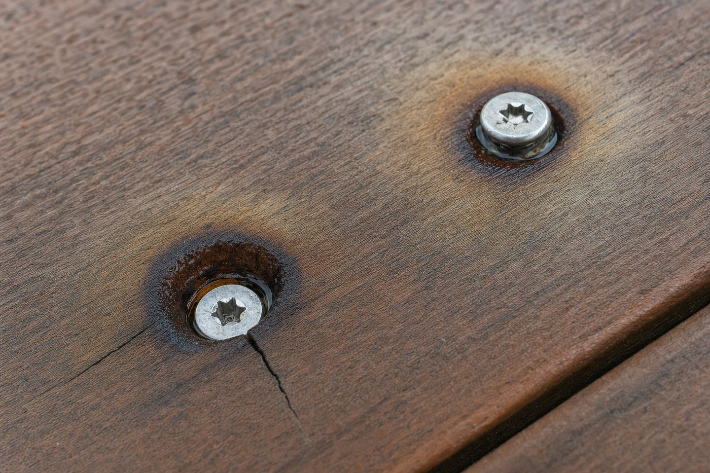
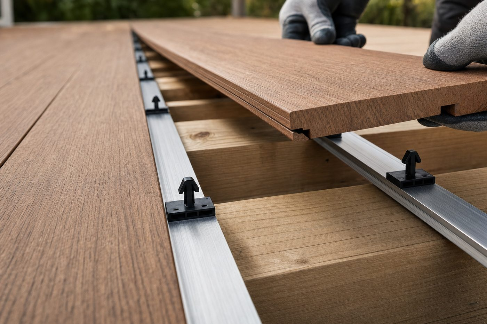

Every deck gets fastened one of two ways. Either the screws go down through the top of the board where you can see them, or the hardware goes underneath the board where you cannot. That is the whole decision, and it is usually made in about ten seconds on a job site. It deserves longer than that, because it is the one choice that touches how the deck looks, how it drains, how it moves, how long it takes to build, and how you fix it in year eight.
Here is the honest comparison. Not a sales page, a spec discussion. Where face screwing wins, it wins, and we will say so.
Start with the arithmetic
Face screwing is not two screws. It is two screws per board, per joist, for every board on the deck. Run 5.5 inch boards over a frame at 16 inches on center and that works out to roughly three fasteners in every square foot of finished deck. A 400 square foot deck carries well over a thousand visible screw heads. Each one is a hole drilled through the wear surface of the board, and each one has to be driven to the right depth, in line with its neighbor, without mushrooming the material around it.
Appearance is the obvious one, and it is not the important one
A grid of screw heads is the first thing anyone notices, and on a premium wood-grain board it is the thing that gives away the price of the deck. Our boards are built to look like lumber, with a five-layer RENOLIT PMMA film over a proprietary ASA capstock, and a thousand stainless dots read straight through that work. If you want to see how much detail is in the surface, the board construction breakdown covers what is actually under your feet.
But appearance is the argument everyone already knows. The reasons that matter show up later.
Every face screw is a hole in the wear surface
A countersunk screw head sits in a shallow dish. That dish collects water, pollen, and dirt, and it holds them against the one place where the protective cap layer of the board has been cut through. On wood decking that is where rot starts. On a capped board it is where staining and discoloration start, because you have opened a path past the cap into the core.

Then there is the fastener itself. Stainless is the right call and most installers use it, but a galvanized or coated deck screw in a wet coastal environment will eventually bleed a rust ring into the board around it. The screw is fine structurally. The deck looks tired anyway.
PVC boards move, and a rigid screw fights that
This is the part that gets skipped. Cellular PVC expands and contracts with temperature along its length. A 16 foot board on a dark deck in full August sun is measurably longer than the same board in February. A face screw pins the board to the joist at a fixed point, so the board has to relieve that movement somewhere else: at the ends, at the butt joints, or around the screw hole itself. Over enough cycles that shows up as slight mushrooming around heads, screws that back out a hair above the surface, or the faint oil-canning between fasteners you see on a long run.
A clip in a groove works differently. The clip holds the board down against uplift and holds the gap consistent, while the groove allows the board to move along its length inside the cradle. The board is restrained where it needs to be and free where it needs to be. That is the actual engineering reason hidden fasteners suit PVC and capped boards, and it has nothing to do with looks.
Face screwing decides where the board is allowed to be. A clip decides how the board is allowed to move.
Install time swings the other way than people expect
The assumption is that hidden fasteners are slower because there is extra hardware. On a small deck with a lot of angles, that can be true. On an open field, it is usually backwards.
With InvisiClip™, pre-fabricated aluminum rails are anchored on top of every joist, running parallel with the joists, at 16 inches on center maximum, with the first rail no more than 4 inches from the deck edge. Fasteners go through pre-drilled holes in the rail every 20 inches on a Start Rail and every 10 inches on a Mini Rail, minimum two per rail. Clips snap into the rail slots. Then the board drops in from above, the groove catches each cradle in turn, and a rubber mallet seats it.

Count the operations. Face screwing is position the board, hold the gap, pre-drill, drive, drive again, check depth, repeat at every joist. Hidden is set the rails once, snap clips, then drop boards. Nobody is on their knees driving fourteen hundred screws to a consistent depth, and nothing has to be plugged afterward. The gapping is also handed to the hardware instead of to whoever is holding the spacer, which is why hidden decks tend to have straighter gap lines.
Repairs are where hidden quietly wins
Something will happen to one board. A grill, a dropped tool, a scratch from something dragged across it. On a face-screwed deck you back out the screws in that board, and if it is not the last board in the run you are also fighting the boards on either side of it to get it out. Then you have new screw holes near old ones.
InvisiClip™ Start Rails release individual boards with Grad keys. You lift the damaged board out, drop a new one in, and the neighbors never move. Mini Rails are fixed and are used at board ends and butts, so the removable path is designed in rather than hoped for.
What about holding power
The fair objection to hidden fasteners is uplift. If nothing is screwed through the board, what keeps the wind from getting under it on an exposed deck or near the water? We had that answered by a lab instead of arguing it. American Pro grooved decking on InvisiClip™ was tested by Intertek Building & Construction under ICC-ES AC174 Section 4.1.4 using ASTM E330, and three specimens averaged 306 psf ultimate uplift and 292 psf sustained. The full breakdown of that test explains what the numbers mean on a real deck.
One condition matters: those results belong to the tested assembly. Rails on top of every joist, 16 inches on center maximum. Stretch the framing wider and you are no longer building what was tested.
Side by side
| Consideration | Face screwing | Hidden fasteners |
|---|---|---|
| Visible hardware | About 3 screw heads per sq ft | None on the walking surface |
| Cap layer | Penetrated at every fastener | Uncut, exactly as extruded |
| Water | Sits in each countersink dish | Drains through consistent gaps |
| Board movement | Pinned at each joist | Restrained down, free along length |
| Gap consistency | Set by installer and spacers | Set by clip geometry |
| Single board repair | Back out screws, fight neighbors | Release with Grad keys, lift out |
| Field install labor | Drive and check every fastener | Rails once, then drop boards |
| Hardware cost | Lower | Higher |
| Board requirement | Any board, grooved or solid edge | Grooved edge board only |
| Tested uplift | Varies with screw and framing | 306 psf avg. ultimate, Intertek AC174 |
Where face screwing is still the right answer
It is a real method, not a mistake. Face screwing is the right call in several places, and pretending otherwise would be dishonest.
- Solid edge boards. No groove, no clip. A square edge board has to be face screwed or fastened from below.
- Stair treads and picture-frame borders. Short, cut, and often unsupported at one edge. Screws are simpler and frequently required.
- The last board and tight closures. Where a board cannot drop in from above, it gets fastened from the top.
- Repairs on an existing screwed deck. Matching what is already there beats mixing systems mid-deck.
- Budget-first jobs. A box of Type 316 stainless screws is cheaper than rails and clips. If the deck is a utility surface, that is a defensible trade.
Most real decks use both. Clips through the field where the eye goes, screws at the stairs, the border, and the closures. That is not a compromise, it is just how the two methods are meant to share a deck.
The short version
Face screwing puts about three holes in every square foot of the surface you paid for, pins the board where it wants to move, and gives you a thousand small places for water to sit. Hidden fasteners move all of that underneath, keep the gaps honest, let a board be replaced on its own, and on our grooved boards they have a tested uplift number behind them. Screws still belong on stairs, borders, and closures. They stopped being the default for the field of a premium PVC deck a while ago.
If you are choosing a board first, the TrueGrain Deck™ and Legacy PVC pages cover the grooved profiles that run on InvisiClip™, and the decking overview lays out the full line.